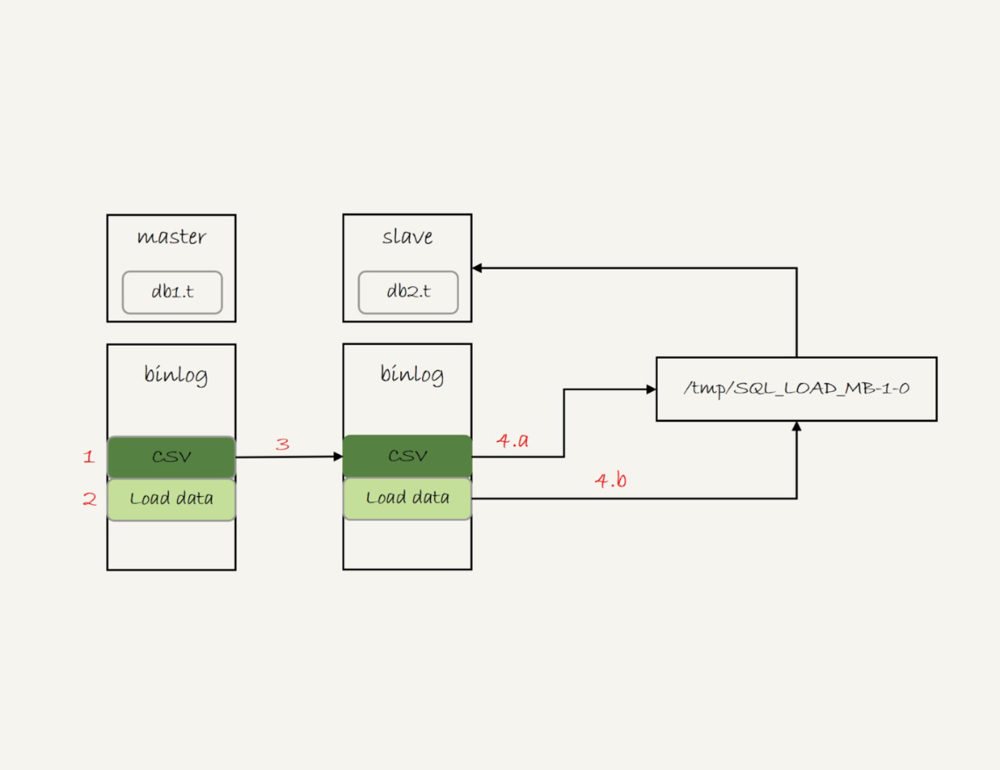
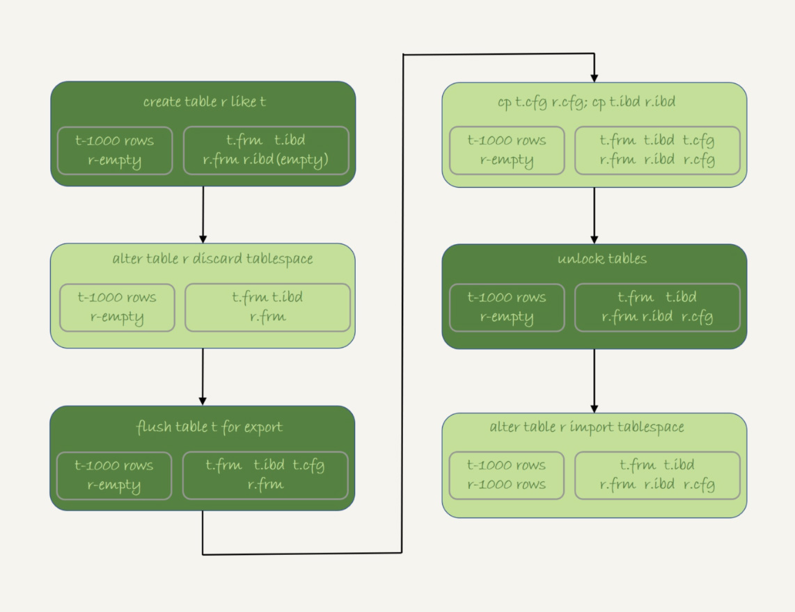

如何快速的复制一张表
我们往往会采用insert … select。但是这种做法会对原表加锁。所以更稳妥的办法是将表导出到临时文件中。本文章会讨论如何快速的赋值一张表。测试数据如下
1 | create database db1; |
mysqldump方法
例如命令
1 | mysqldump -h$host -P$port -u$user --add-locks=0 --no-create-info --single-transaction --set-gtid-purged=OFF db1 t --where="a>900" --result-file=/client_tmp/t.sql |
参数说明：
- single-transaction 不对表db1 t 加锁， START TRANSACTION WITH CONSISTENT SNAPSHOT的方法；
- add-locks 输出的文件不增加”LOCK TABLES t WRITE”
- no-create-info 不需要导出表结构
- set-gtid-purged 不需要gtid的信息
- result-file 生成文件的位置，注意是客户机的位置
这时候t.sql就是一条insert语句，我们在新表上执行t.sql就可以导入数据了，导入语句如下
1 | mysql -h127.0.0.1 -P13000 -uroot db2 -e "source /client_tmp/t.sql" |
注：source并不是Mysql的命令，真正的语句还是Insert
导出CSV文件
1 | select * from db1.t where a>900 into outfile '/server_tmp/t.csv'; |
这条语句注意如下：
- 受参数secure-file-priv控制
- 如果是NULL，说明 outfile被进制
- 设置为empty，可写到任意地方，一般不建议这么设置这是不安全的
- 设置为目录，说明outfile只能到指定的目录
- t.csv没有覆盖功能，所以要保证目标目录下的t.csv不存在否则会报错
- 原则是一条数据行对应文本一行，但是如果数据行有换行符能会跟上“\”这个转义字符这样字段之间、数据行之间可能会分开
导入命令如下：
1 | load data infile '/server_tmp/t.csv' into table db2.t; |
执行流程如下：
- 打开文件，”\t”区分字段，“\n”区分数据
- 校验csv文件的字段和新表字段是否一致，不一致会报错
- 循环写入到新表知道写入完成
- 如果binlog_format是statement
- 主库完成后，将csv文件内容直接写到binlog中
- binlog写入load data local infile ‘/tmp/SQL_LOAD_MB-1-0’ INTO TABLE
db2.t。 - 这个binlog传到备库
- 备库apply接到这个binlog
- 现将csv内容写入到SQL_LOAD_MB-1-0中
- 执行loaddate导入数据
如图：

注意：loaddata有俩种方式
- 加local，读取的是服务器文件，受参数secure-file-priv控制
- 不加local，读取的是客户端文件，不收参数secure-file-priv控制
还有csv里不包含表结构，所以可以用下面的语句导出表结构和csv数据文件
1 | mysqldump -h$host -P$port -u$user ---single-transaction --set-gtid-purged=OFF db1 t --where="a>900" --tab=$secure_file_priv |
物理copy法
优点：速度最快，适合大表的导入
缺点：只能在服务器copy表文件；并且没法导入部分数据；且双方都得是innodb表
流程如下
- 执行create table r like t;
- 执行alter table r discard tablespace，这时候r.ibd会被删掉
- 执行flush table t for export，这时候db1会生成t.cfg文件
- 在db1目录下执行cp t.cfg r.cfg;cp t.ibd r.ibd
- 执行unlock tables，这时候t.cfg会被删除
- 执行alter table r import tablespace,将这个r.ibd作为表空间，由于是步骤4cp过来的所以就有了表数据
如图

注意：
- 在步骤3 flush 表之后，表是被lock的
- 执行import tablespace时候为了让表空间id和数据文件一直会刷新所有的数据页，import会有一定执行空间但是比逻辑导入会快很多。
- 一定要注意权限问题（尤其是执行步骤4时候要确认好是否对.ibd有读写权限）